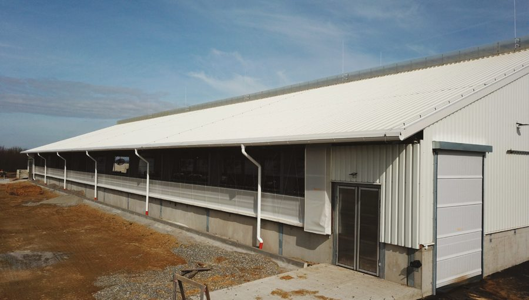
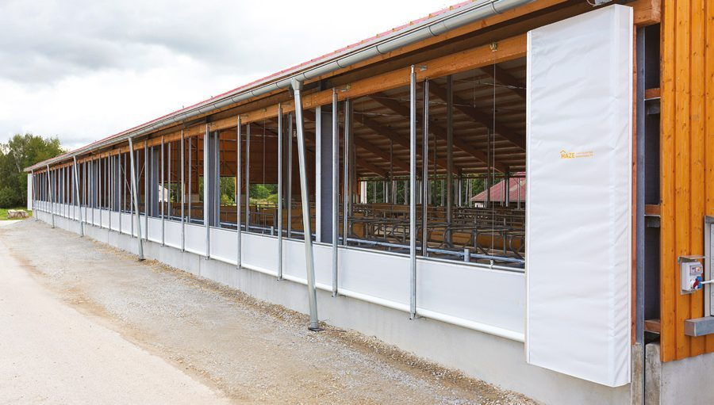
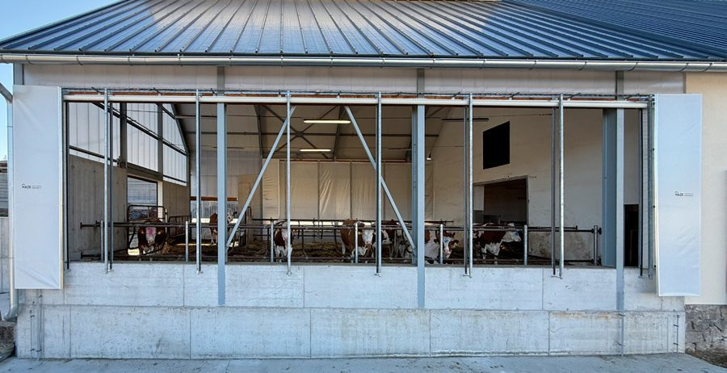
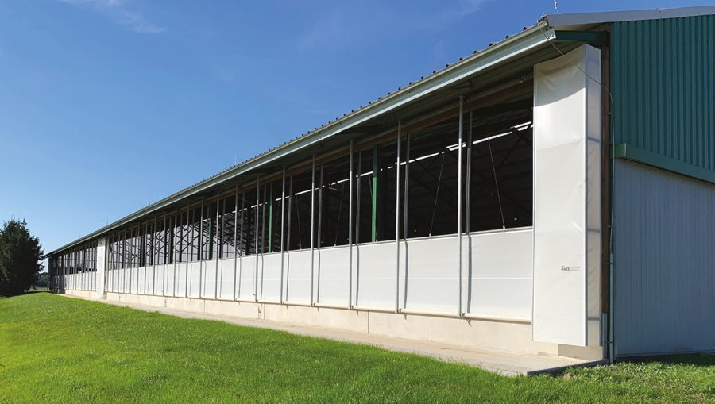
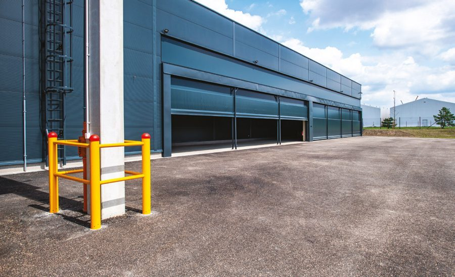
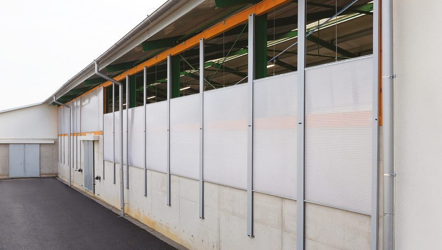

Boční ventilační systémy BVS A-F.
Boční stěna stáje, kterou lze otevřít pro výměnu vzduchu a uzavřít proti chladu a průvanu. Vyrábíme šest typů A až F ve třech principech - svinovací, rolovací a polykarbonátová stěna. Liší se způsobem otevírání, ovládáním, materiálem výplně a maximálním rozměrem. Níže najdete detail každého typu i srovnání v tabulce.
Každý typ popsaný.

Boční ventilační systém typu A
Osvědčené řešení, jehož funkčnost potvrdilo přes 20 let praxe. Plachta je v horní části zavěšena na ocelových lankách napojených na hlavní lano, které se navíjí přes vodicí kladky na bubínek u motoru nebo mechanického navijáku - tím se plachta pohybuje svisle. Ve spodní části je pevně připevněna k parapetní fošně a při pohybu se skládá na parapet. Opěrná síť drží plachtu za nepříznivého počasí.
| Princip | Navíjení nahoru, dole skládání na parapet |
|---|---|
| Ovládání | Ruční (mechanický naviják) nebo elektrické |
| Výplň | PVC plachta odolná UV i mrazu, opěrná síť |
| Max. šířka | 60 m |
| Max. výška | 2,9 m |
| Hodí se na | Běžné odvětrávání stájí, jednoduchá a spolehlivá obsluha |
| Příklad realizace | Vysoké Studnice |

Boční ventilační systém typu B
Jedno z nejoblíbenějších řešení bočního odvětrávání. Oproti typu A je dole na plachtě navlečená hřídel propojená s motorem - plachta se ve spodní části navíjí, takže se nešpiní a při úplném i částečném uzavření zůstává neustále napnutá. Pohon zajišťuje mechanický naviják nebo elektropohon, který lze napojit na meteostanici HAZE a stěnu řídit automaticky.
| Princip | Navíjení na spodní hřídel, plachta stále napnutá |
|---|---|
| Ovládání | Mechanický naviják nebo elektropohon (lze napojit na meteostanici) |
| Výplň | PVC plachta odolná UV i mrazu |
| Max. šířka | 60 m |
| Max. výška | 3 m |
| Hodí se na | Provozy, kde se plachta nesmí špinit a má zůstat napnutá |
| Příklad realizace | Okrouhlá Radouň |

Boční ventilační systém typu C
Plachta je nahoře pevně uchycená v hliníkové liště a otevírá se odspodu pomocí hřídele poháněné elektropohonem - tím se plynule mění výška zakrytí stěny. Proti větru je jištěná vodítky a propouští větší objem vzduchu. Hodí se do stájí pro skot a čekáren, ale i do jízdáren, kde za pěkného počasí stačí plachty vyrolovat nahoru. Verze C+ zvládne díky dvěma hřídelím výšku až 5,5 m; u výšek nad 4 m instalujeme vždy C+.
| Princip | Rolování odspodu, plynulá regulace výšky otevření |
|---|---|
| Ovládání | Elektropohon (lze napojit na meteostanici) |
| Výplň | PVC plachta (výplň SCRIM), uchycení v AL liště |
| Max. šířka | 100 m |
| Max. výška | 5,5 m (verze C+, dvě hřídele) |
| Hodí se na | Stáje pro skot, čekárny, jízdárny; větší objem vzduchu |
| Příklad realizace | Telecí |

Boční ventilační systém typu D
Plachta se roluje na spodní hřídel ovládanou elektropohonem a navíc je pohyblivé i horní uchycení, které řídí druhý motor - stěna proto slouží k odvětrávání i ke stínění. Místo podpůrných sítí využívá masivní profily opatřené gumou. Středové zaplachtování mezi stěnami brání profukování, krajová zaplachtování chrání okraje proti potrhání ve větru. Verze D+ dosáhne díky dvěma hřídelím výšky až 5,5 m; u výšek nad 4 m instalujeme vždy D+.
| Princip | Rolování na spodní hřídel + pohyblivé horní uchycení (2 motory) |
|---|---|
| Ovládání | Elektropohon |
| Výplň | PVC plachta, masivní opěrné profily s gumou (bez sítí) |
| Max. šířka | 100 m |
| Max. výška | 5,5 m (verze D+, dvě hřídele) |
| Hodí se na | Provozy, kde je potřeba ventilace i stínění zároveň |
| Příklad realizace | Sloupnice |

Boční ventilační systém typu E
Navržený pro zemědělské i průmyslové objekty s vysokými nároky na spolehlivost a odolnost. Otevírá se odspodu s plynulou regulací, plachta je v hliníkové liště a uprostřed opatřená kedrem pro uchycení do navíjecí hřídele - díky tomu se navíjí dvakrát rychleji než běžné systémy a rychle reaguje na změny mikroklimatu. Spodní hřídel udržuje plachtu napnutou, navařený límec utěsní prostor k terénu. Umí nahradit i rolovací vrata u širokých vjezdů a vyrobíme ji v libovolném odstínu dle vzorníku RAL.
| Princip | Rychlé rolování odspodu (navíjení 2× rychleji) |
|---|---|
| Ovládání | Elektropohon |
| Výplň | PVC plachta s kedrem, navařený spodní límec; odstíny dle RAL |
| Max. šířka | 60 m |
| Max. výška | 4,5 m |
| Hodí se na | Průmyslové haly a sklady, široké vjezdy, náhrada rolovacích vrat |
| Příklad realizace | Ovčáry |

Boční ventilační systém typu F
Jako výplň využívá dutinkový polykarbonát o tloušťce 16 nebo 32 mm. Doporučujeme ji u staveb s vyššími nároky na tepelnou izolaci, především do čekáren před dojírnami. Desky dodáváme v různé propustnosti světla, takže do objektu prochází denní světlo. Ovládá se manuálním navijákem nebo elektropohonem.
| Princip | Pevná průsvitná stěna, manuální nebo elektrické ovládání |
|---|---|
| Ovládání | Manuální naviják nebo elektropohon |
| Výplň | Dutinkový polykarbonát 16 nebo 32 mm, různá propustnost světla |
| Max. šířka | 60 m |
| Max. výška | 2,5 m |
| Hodí se na | Stavby s nároky na tepelnou izolaci, čekárny před dojírnami |
| Příklad realizace | Bohdalov |
Který typ na vaši stáj.
Rozhodují rozměry stěny, požadavek na ovládání a to, zda potřebujete jen větrat, nebo i stínit a izolovat.
- A / B - Jednoduché a osvědčené větrání. Svinovací stěna pro běžný provoz. Typ B navíc plachtu nešpiní a drží napnutou.
- C / D - Plynulá regulace a velké stěny. Rolovací stěna až 100 m široká; pro výšky nad 4 m verze C+/D+. Typ D umí i stínit.
- E - Rychlá reakce a průmysl. Navíjí 2× rychleji, zvládne i náhradu rolovacích vrat u širokých vjezdů.
- F - Izolace a denní světlo. Polykarbonátová stěna do čekáren před dojírnami a tam, kde záleží na teple.
Srovnání všech typů A-F
| Typ | Druh stěny | Výplň | Max. rozměr (š × v) | Ovládání | Hodí se na | |
|---|---|---|---|---|---|---|
| A | Svinovací | PVC plachta | 60 × 2,9 m | ruční / elektro | běžné odvětrávání stájí | Detail → |
| B | Svinovací | PVC plachta | 60 × 3 m | naviják / elektro | plachta se nešpiní, stále napnutá | Detail → |
| C / C+ | Rolovací | PVC plachta | 100 × 5,5 m | elektropohon | skot, čekárny, jízdárny | Detail → |
| D / D+ | Rolovací | PVC plachta | 100 × 5,5 m | elektro (2 motory) | ventilace i stínění | Detail → |
| E | Rolovací | PVC plachta | 60 × 4,5 m | elektropohon | průmysl, široké vjezdy | Detail → |
| F | Polykarbonát | PC 16 / 32 mm | 60 × 2,5 m | naviják / elektro | izolace, čekárny u dojíren | Detail → |
Nevíte, který typ se hodí na vaši stáj?
Pošlete rozměry stěny, projdeme to s vámi a navrhneme konkrétní typ A-F.
Co se ptáte nejčastěji.
Z čeho je výplň stěny?
U typů A až E PVC plachta odolná UV záření i mrazu, u typu F dutinkový polykarbonát o tloušťce 16 nebo 32 mm. Polykarbonát volíme tam, kde je potřeba lepší tepelná izolace a průchod denního světla.
Jak se boční stěna ovládá?
Mechanickým navijákem (ručně) nebo elektropohonem. Elektrické typy lze napojit na meteostanici HAZE a stěnu řídit automaticky podle teploty a větru.
Jak velkou stěnu zvládnete zakrýt?
Podle typu - šířka až 100 m a výška až 5,5 m (rolovací verze C+ a D+ se dvěma hřídelemi). Každou stěnu vyrábíme přesně na míru, ne z polotovarů.
Zvládne stěna i stínění, nejen větrání?
Ano, typ D má pohyblivé horní i spodní uchycení a slouží k odvětrávání i ke stínění zároveň.
Jak probíhá montáž?
Stěnu vyrobíme na míru a montáž zajišťuje náš montážní tým. Po předání zaučíme obsluhu. Na konstrukci i montáž poskytujeme záruku 2 roky.
Jde stěnou nahradit rolovací vrata?
U širokých vjezdů ano - díky robustní konstrukci a variabilním rozměrům to umožňuje zejména typ E.